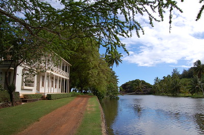
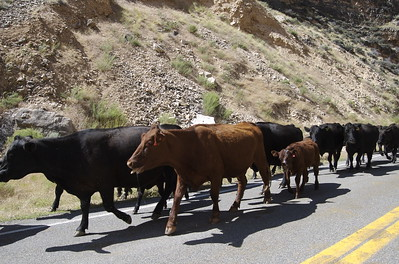

Unique to the Taker
I think the person who took any photograph has a different affinity with that photo than all other viewers of that photo in the future. As we know, photos are visual representations of a moment in time, but what has struck me lately is the additional aspects they represent: a specific location, vantage point, and mental everythingness (yes, that's a word). The person who is going to be tied the most to that photo, is the person who is mentally tied to it. I think that somewhere deep down that person is able to remember the circumstances surrounding that photo. Let me give you a couple examples...
]
You see... some sort of water off to the right, palm trees and other greenery all around, a dirt road going in front of a building of some kind. You may even see this as a the road along with Magnum P.I. drove his car in the opening sequence of the show (though you wouldn't recognize the home, since it wasn't shown). You may even recognize this as Allerton Gardens on Kauai and say to yourself “That was such a nice place—so beautiful.” You may even have been there when this picture was taken, so it all looks very familiar, including knowledge of all things not shown in the photo, like the 15+ people walking up behind me while I try to hurry along and take pictures before they get into the picture and ruin what I see as a perfect shot. One thing still remains missing from anybody's memory besides mine – and it's that difference, which I can't fully explain or verbalize, that makes this photo unique and even more special – to me.
]
Cows, in a street, on the opposite side of the road, next to an incline. Picture taken... while walking? Standing? Driving a car? Nice day, or near freezing? Where was this? What did it smell like? Do I even want to know? Which one of these cows brushed up against my car? Were these just a few cows or dozens? There might actually be somebody out there who could answer all of those questions, but they'll still never be able to relate to this picture like I can, since my eye and mind have witnessed this exact scene before, and for anybody else, the best it could get is close, but not quite right.
How many pictures are there from our/my camera with me in them? Nowhere near as many as there are where I'm behind the camera. This could be because I don't particularly enjoy my picture being taken. It could be that I'm a memory hog and enjoy capturing all these moments for myself. Maybe it's both of those things. The point of this entry? I'm not really sure... just that I like taking pictures and keep taking more and more in some kind of attempt to remember all those moments from my life. Others should do the same.
Unique to the Taker Files...
{kind=link}
{kind=link}
- Prior: Mousecapades II
- Next: Two, no, wait... Three with One Stone